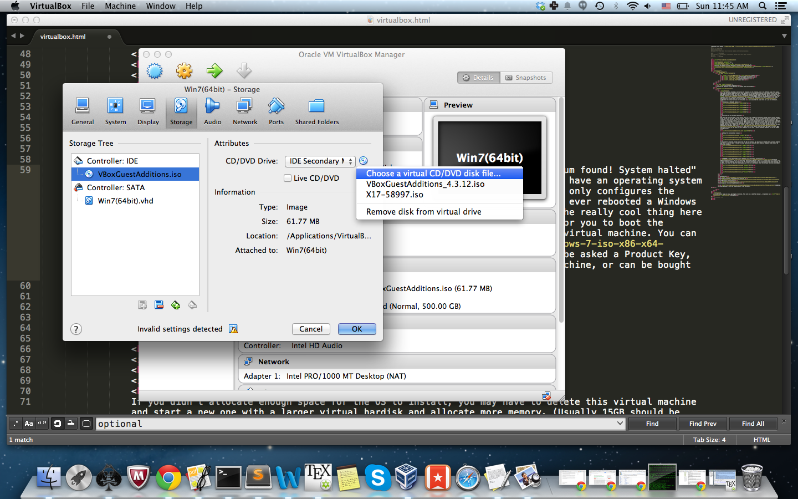
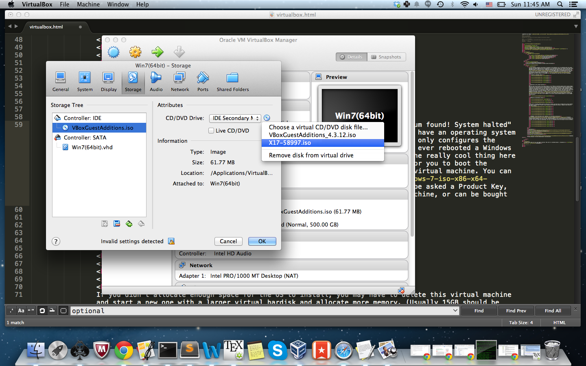
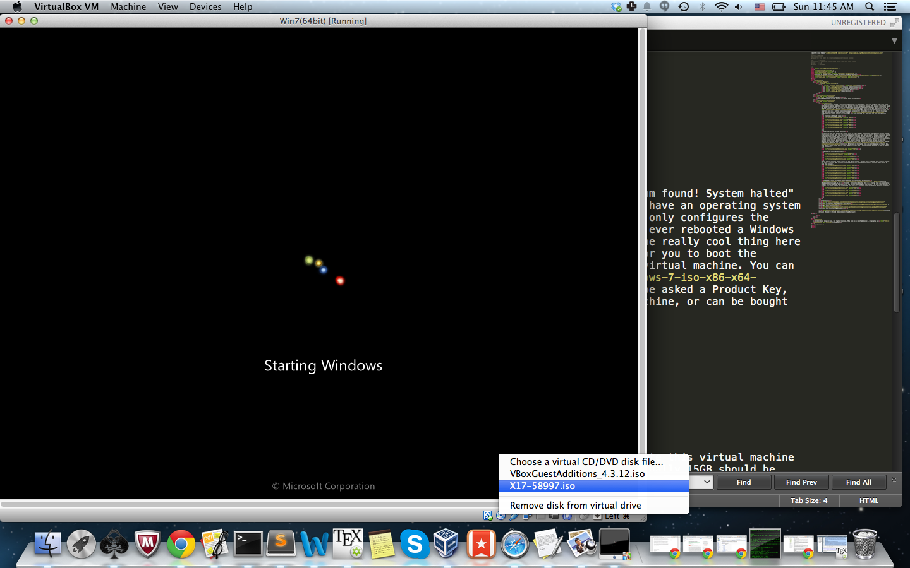
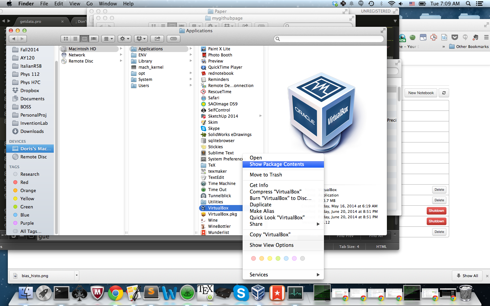
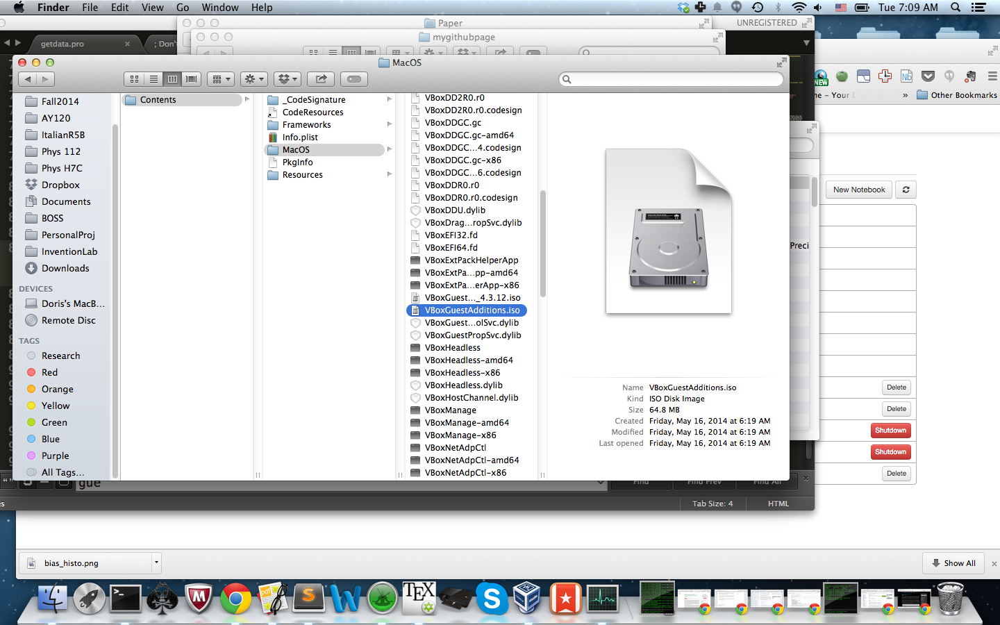
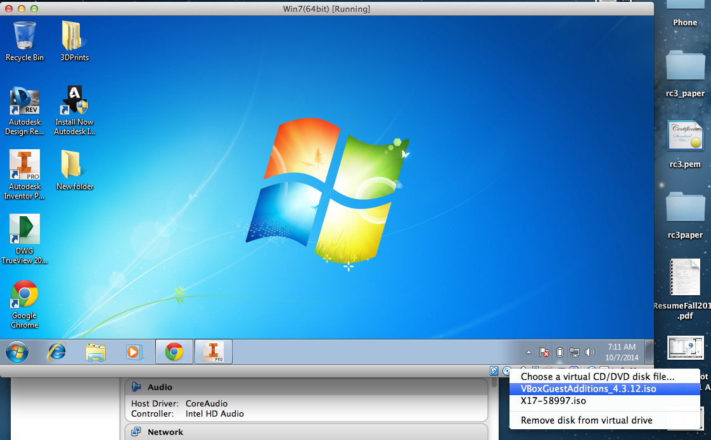
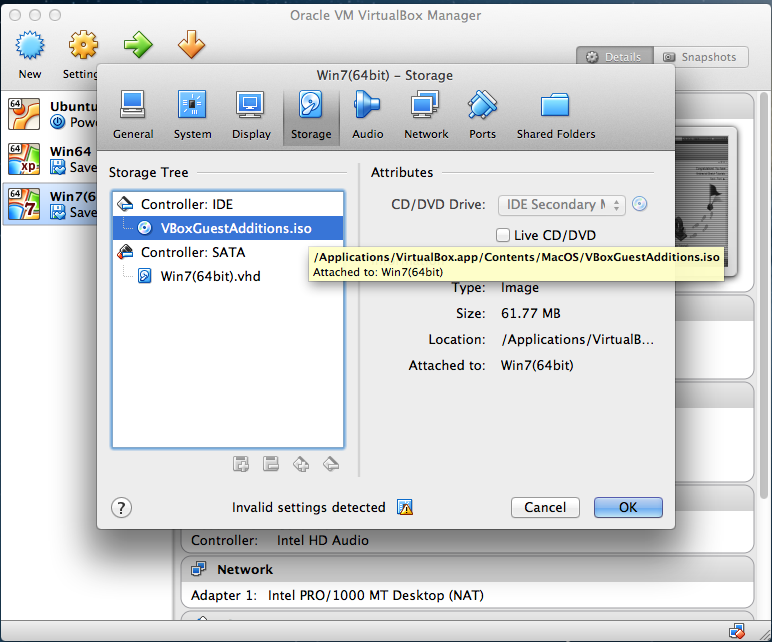

I've recently started a new series of projects on 3D printing, but I am shifting away from using SketchUp and wanted something more like AutoCAD for the mechanical design. The closest thing that found was Adobe Inventor which is free for student use using your .edu email address, but it only works on Windows machine. So I decided setup a VirtualBox Windows7 64bit image on my Mac OSX (Mavericks). The VirtualBox official documentationis good for reference but its a bit too comprehensive and outdated for VirtualBox 4.3.12 in a few of the steps. This tutorial assumes that you have already downloaded the latest version of VirtualBox and executed the .dmg file (or .exe for Windows).
Creating a Windows7 image


Starting up the virtual machine
Now this was the part that I was really stuck on. The "FATAL: No bootable medium found! System halted" error is due to the fact that the virtual machine that you just set up doesn't have an operating system installed. Even though you told it that this was a windows virtual machine, it only configures the virtual box settings to that, you still need to boot the OS yourself.You can download the Windows .iso file here. Note that in the latter step you will be asked a Product Key, this can be found at the back of your computer if you have a native windows machine, or can be bought from Microsoft.

If you've ever rebooted a Windows machine, you know what I'm referring to (BIOS setup and all that fun stuff). The really cool thing here is that since this is a virtual machine, it doesn't have a physical CD Drive for you to boot the machine but you can "insert the CD" which is the .iso file and run it on your virtual machine. Put the downloaded .iso file into a directory that VirtualBox can find, and choose it in the CD setting.
Then select the CD that corresponds to the installation iso file.You may have to restart virtualbox and your virtual machine for this to work.
If it really doesn't work, try selecting the CD setting on the lower right hand corner of your vritaul machine and select the CD then restart the virtual machine (completely shutdown, not via the saved-state option)
Window OS installation steps


If you didn't allocate enough space for the OS to install, you may have to delete this virtual machine and start a new one with a larger virtual hardisk and allocate more memory. (Usually 15GB should be more than enough).


Optional: Using VirtualBox Guest Addition for adjustable screensize
Download VBoxGuestAdditions_4.3.12.iso from the VirtualBox Website. This is a program that you need to run on your virtual machine, you send it to the virtual machine as if you insert a CD into that machine. To do this, you need to move the downloaded .iso file to a directory that the Virtual CD drive can detect.


